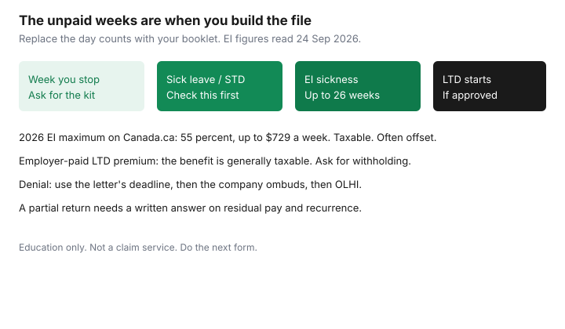

Insurance · Canada
How to Prepare a Canadian Long-Term Disability Claim Without Losing Months of Income
A long-term disability claim is a file you build while you are ill, on a clock that starts before the first cheque. The elimination period is unpaid by the long-term plan. Forms that arrive after that period ends are how households lose one or two months they cannot replace. This page is the sequence: when to file, what medical evidence the insurer is actually asking for, how Employment Insurance sickness benefits sit next to short-term and long-term plans, how tax withholding changes if the employer paid the premium, and what to do if the answer is no. It is education for a hard month. It is not a claim service, and it is not a promise that a benefit will be approved.
If you are in that month, do the next form. Ask one person you trust to keep the folder. You do not have to understand the whole contract today. The workplace LTD gaps guide is the booklet you should already have read for the benefit amount, the occupation test, and the offsets. This page is how the claim moves.
Disclosure: This page is education. There is no affiliate offer. We do not link to claim-filing firms, public adjusters, or lenders. Saving Optimizer does not claim a partnership with any insurer or with Service Canada. We do not prepare claims. Dollar figures for Employment Insurance were read on Canada.ca on 24 Sep 2026. Your booklet’s dates control.
Key takeaways
- Ask for the long-term disability forms at the start of the elimination period, not on the day the benefit is supposed to begin.
- The insurer needs function, not only a diagnosis: what you cannot do in the job you had, from the doctor who treats you, plus the employer’s description of that job.
- EI sickness benefits in 2026 are up to 26 weeks, 55 percent of insurable earnings, to a maximum of $729 a week, and they are taxable. They are not a second full salary on top of a group plan. Check the employer’s sick leave before you assume EI is the first door.
- If the employer paid the long-term disability premium, the benefit is generally taxable. Ask the insurer to withhold. A deposit that looks like take-home pay can be a tax bill.
- A denial letter has an internal deadline. Miss it and the contractual appeal can close. External options come after that review. Lawsuits have provincial limitation periods. Ask a lawyer before you assume you have years.
- A partial return to work can reduce the benefit or restart it. Report earnings. Read the recurrence wording before you “try a week” and lose the elimination period you already served.
Know your elimination period and file before it ends
The elimination period is the number of days you must be disabled, as the contract defines it, before long-term benefits are payable. Booklets often say 90 or 119 days. Yours may say something else. Those days are not a waiting room. They are when you collect the claim. Short-term disability or sick leave may pay some of them. Long-term disability will not pay them retroactively just because you were busy being ill, except to the extent the contract says late notice is still accepted. Read the notice clause. Then act as if the deadline is the end of the elimination period.
| When | What you do |
|---|---|
| The week you stop working | Tell the employer. Ask human resources for the short-term and long-term claim kits the same week. Book the doctor. |
| Inside the first month | Complete your statement. Send the employer form. Deliver the attending-physician form to the doctor’s office yourself, with the job description attached. |
| Midway through the elimination period | Confirm the insurer has all three forms. Ask what is still missing, in writing. Apply for EI sickness or CPP disability if the booklet or Service Canada says you should. |
| Before day 119 in this sketch | Every form is in. You know whether a decision is pending or whether they have asked for a specialist note. You are not starting the package on day 120. |

Write the insurer’s phone number, the claim number, and the name of the examiner on the front of the folder. If forms are only in a portal, download each upload confirmation. A portal that times out is not a record.
Medical evidence pack: specialists, functional abilities, and employer forms
The diagnosis is the label. The claim is paid, or not, on function. The insurer is asking whether you meet the occupation test in the contract. Early in many group plans that test is your own job. Later it often becomes a broader test. The gaps guide walks through that switch. For the claim file, translate the test into tasks.
- Your statement. The hours you worked, the tasks you cannot do, and the date you last worked. Avoid a one-line “I am sick.” Describe the job: standing, screens, driving, deadlines, lifting, customer contact, whatever it actually was.
- Attending physician. The doctor who treats the condition, not a clinic that saw you once. Give them the insurer’s form and a copy of the job description. Ask them to complete functional limits — hours, concentration, lifting — not only the diagnosis code. Pay the form fee if the office charges one. A blank form in a pile is a month.
- Specialists. If a specialist is following you, ask whether the insurer wants that report. Send consultation letters you already have. Do not wait for a perfect file if the elimination period is ending. Tell the examiner what is still coming.
- Employer form. Job demands, last day worked, sick leave used, and the salary the benefit formula uses. A job description from the hiring poster in 2014 is weaker than a current one. Ask human resources to complete this early. You cannot complete it for them.
Keep copies of imaging and lab reports the doctor relied on. If the insurer sends you to an independent exam, go, and write down the date. Missing an exam without a documented reason is a common way a file stalls. If you cannot attend, tell them before the appointment and ask for another date.
Coordinate EI sickness, STD, and LTD so gaps do not appear
Three programs can touch the same month. They do not stack into three paycheques.
- Employer sick leave and short-term disability. This is the first money, if you have it. Canada.ca tells people to check employer sick leave before applying for EI sickness. Ask human resources what they pay, for how many weeks, and whether they require you to apply for EI.
- EI sickness. Canada.ca, page details dated 2 June 2026, says EI sickness can provide up to 26 weeks if you cannot work for medical reasons. The benefit-amount page says you could receive 55 percent of insurable earnings, up to a maximum of $729 a week in 2026. The benefit is taxable. You need a medical certificate. The amount and the weeks depend on your insurable earnings and how long you are unable to work. EI has its own start rules. Do not assume it pays from the first unpaid day.
- Long-term disability. Starts after the elimination period if the claim is approved. Group plans commonly offset EI, CPP or QPP disability, workers’ compensation, and auto income-replacement benefits. The offset list is in the booklet. Apply when the booklet says to apply. A refusal to apply for CPP disability can let the insurer estimate an offset anyway. The gaps guide has the 2026 CPP disability maximum and the tax overview.
The gap to prevent is a short-term plan that ends in week 16 and a long-term plan that starts at day 119, with no EI application in between because everyone assumed the plans met. Put the three end dates on one line. If they do not touch, apply for the program that covers the hole, and ask the long-term insurer how they will treat that money so you are not accused later of double-dipping. Report income you do receive. An overpayment is a bill you will not enjoy during a return to work.
Tax withholding differences when employer paid the premium
The Income Tax Act, paragraph 6(1)(f), includes in income periodic amounts you receive for loss of employment income under a sickness, accident, or disability plan to which your employer contributed. That is the usual reason a group long-term disability cheque is taxable when the employer paid the premium. Employer contributions to a group sickness or accident plan are generally not themselves a taxable benefit. The benefit is. If you paid every dollar of the premium with after-tax money, the benefit is generally outside that paragraph. A premium split is generally taxable in proportion to the employer’s share. Confirm the split with payroll. This is not tax advice.
Withholding is the practical piece. A taxable benefit deposited in full looks like spending money until April. Ask the insurer, when the claim is approved, to withhold income tax. Ask them what rate they will use. There is no universal rate. If they will not withhold, move a portion of each deposit into a separate savings account the week it arrives, so the tax payment is not a surprise on top of a reduced household. A personally owned policy, premiums paid by you, is the case where people usually spend the full deposit. Confirm you are actually in that case before you do. Québec payroll rules can differ. Ask the person who files your return.
Appeal steps if denied: internal review then external options
A denial is a letter with reasons and a deadline. Read both on the day it arrives. The internal deadline is contractual. It might be 30 days or 90 days or another number. The letter’s number is the one that counts. Missing it can end the contractual appeal even if you still disagree.
- Internal review. Answer the reasons they gave. If they say the file lacks functional limits, send the limits. If they say you can do your job, send the job description and the doctor’s note against those tasks. Do not send a long letter that does not touch their reasons. Keep proof of the date you sent it.
- The insurer’s ombudsperson. If the internal review stands, use the company’s ombuds office. The address is on the letter or the company site. This is still the company. It is the step before you treat the decision as final.
- OmbudService for Life and Health Insurance. For life and health insurance complaints, including disability, OLHI is the external complaint body consumers are pointed to. It is not a court and it does not replace the internal deadline you already missed. Use it after the company’s process, with the denial and the review letters in the package.
- A lawyer, and the limitation period. Suing on a denied benefit is a legal claim with a provincial limitation period. Ontario’s basic limitation period is two years from discovery, and insurance contracts can have their own rules. Do not calculate your last day from a blog. If the benefit is large and the denial is about the occupation test, a consult before the internal deadline expires is the conservative path. Legal Aid and provincial lawyer-referral services exist if a private consult is out of reach. This page cannot tell you whether you have a case.
Ignore advertisements that promise to “win” disability claims for a fee taken out of the benefit. This site does not recommend them. A fee agreement signed while you are ill and unpaid is a contract you should understand before you sign. A community legal clinic or a lawyer you chose is a different relationship from a company that found you through an ad.
Return-to-work and partial disability rules that protect ongoing benefits
Getting better is the point. A clumsy return is also how a benefit stops. Before you agree to a date, ask the insurer, in writing, how the contract treats three situations.
- Partial or residual disability. Some contracts pay a portion if you return part time and lose a portion of income. Report the earnings. A residual benefit is smaller on purpose. Hiding hours can end the claim and create an overpayment.
- A recurrence. Many contracts say that if you return to work and become disabled again from the same cause within a stated number of months, it is the same claim and a new elimination period does not start. The number of months is in the contract. A “trial week” that fails can still be the same claim if you tell them immediately and the wording fits. A trial that you never report can look like a recovery.
- Rehabilitation. The contract may require you to participate in a return-to-work plan. Cooperating is often a condition of being paid. You can still disagree with a plan that ignores the doctor’s limits. Put the disagreement in writing and offer what you can do. Silence reads as a refusal.
Ask the doctor to write the restrictions for the actual job before the employer builds a modified duty from a blank page. Copy the insurer. If the modified duty is work you can do, the occupation test may say you are not disabled from that job. That can be a fair result. It should not be a surprise. Keep the long-term file open until the insurer confirms in writing that the claim is closed and why. A verbal “sounds like you’re back” is not a closure letter.
When you are working again, redo the booklet questions on the annual review: the benefit percentage, the cap, who pays the premium, and whether a personal policy still makes sense for the slice the group plan does not cover. A claim you survived is not the same as coverage for the next illness.
Sources & date stamps
- Canada.ca, EI sickness benefits — up to 26 weeks; page details 2 June 2026. Used 24 Sep 2026.
- Canada.ca, EI sickness benefit amount — 55 percent of insurable earnings, maximum $729 a week in 2026. Used 24 Sep 2026.
- Justice Laws, Income Tax Act, section 6 — paragraph 6(1)(f) includes periodic wage-loss benefits where the employer has contributed. Used 24 Sep 2026.
- Financial Consumer Agency of Canada, disability insurance — household overview. Used 24 Sep 2026.
- OmbudService for Life and Health Insurance, olhi.ca — external complaint body for life and health, after the company’s process. Used 24 Sep 2026.
Frequently asked questions
When should I start a long-term disability claim?
During the elimination period, not on the day the benefit is supposed to start. Ask for the forms the week you stop working and confirm the insurer has them before that unpaid period ends.
How does EI sickness fit with a group disability plan?
EI sickness can pay up to 26 weeks, 55 percent of insurable earnings to a maximum of $729 a week in 2026, and it is taxable. Check employer sick leave first. Group plans often offset EI. Apply if the booklet or a gap in dates says you should.
Are long-term disability benefits taxable in Canada?
Generally yes when the employer paid the premium, under Income Tax Act paragraph 6(1)(f). Generally no when you paid the entire premium with after-tax dollars. Ask the insurer to withhold if the benefit is taxable. This is not tax advice.
What do I do if the claim is denied?
Meet the internal deadline on the denial letter, answer the reasons they gave, then use the company’s ombuds office. OLHI is the external life-and-health complaint body after that. A lawsuit has a provincial limitation period. Ask a lawyer. This page is not a claim service.
Can I try going back to work without ending the claim?
Ask in writing first. Partial earnings usually reduce the benefit. Many contracts treat a relapse within a stated number of months as the same claim. The number is in your contract. Report the hours.